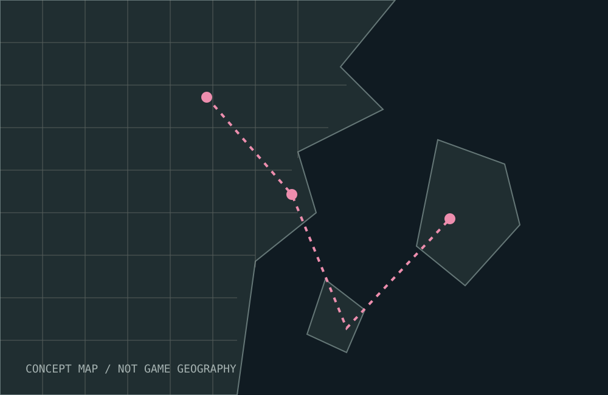

Reported referenceIllustrative artwork
Reported referenceIllustrative artworkBRANDS / AVIATION
The DacityCoin detail
A name on a pink stunt plane sparked a bigger conversation. Separate the fictional reference from real-world tokens.
THE DISCOVERY FILES
Observations, sources, and unanswered questions. Find a thread worth pulling.
Reported referenceIllustrative artworkBRANDS / AVIATION
A name on a pink stunt plane sparked a bigger conversation. Separate the fictional reference from real-world tokens.
 Official sourceIllustrative artwork
Official sourceIllustrative artworkPLACES / WORLD
The official story stretches across Leonida. Start with the setting, then follow the details.
 Official sourceIllustrative artwork
Official sourceIllustrative artworkMEDIA / WATCHLIST
The best place to investigate a detail is the source. Keep the official trailer library within reach.
CULTURE / STORY
Jason and Lucia sit at the center of Rockstar’s official premise. Keep the story grounded in what is published.
Official sourceIllustrative artworkCULTURE / SOUND
Music is another way into the setting. Follow the official music collection and keep speculation separate.

Lab noteIllustrative artworkRESEARCH / METHOD
Every file should make its evidence, interpretation, and unanswered questions easy to distinguish.
Try another search, choose a different category, or save a discovery first.